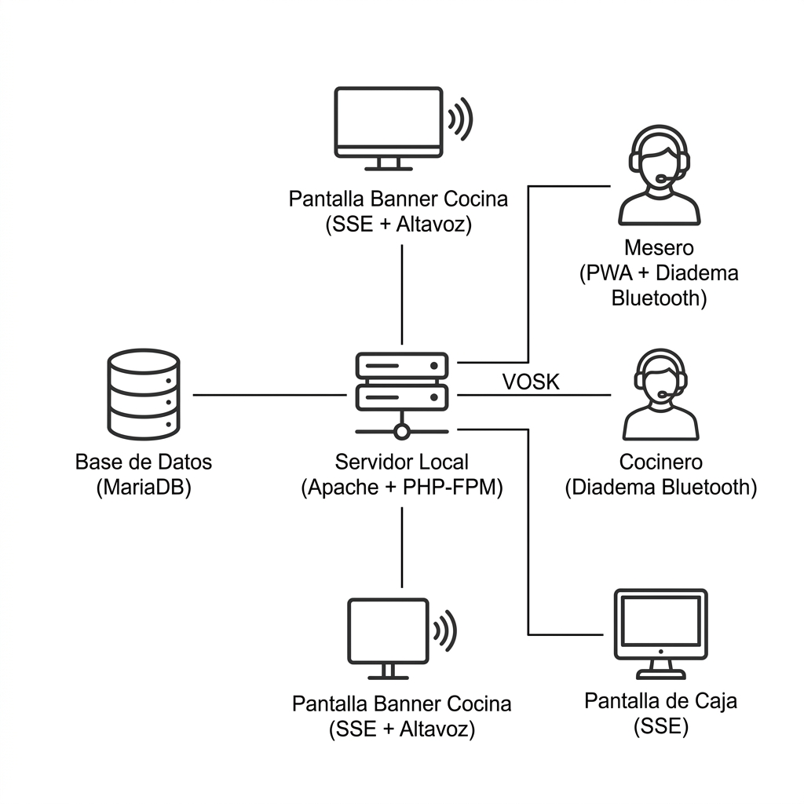
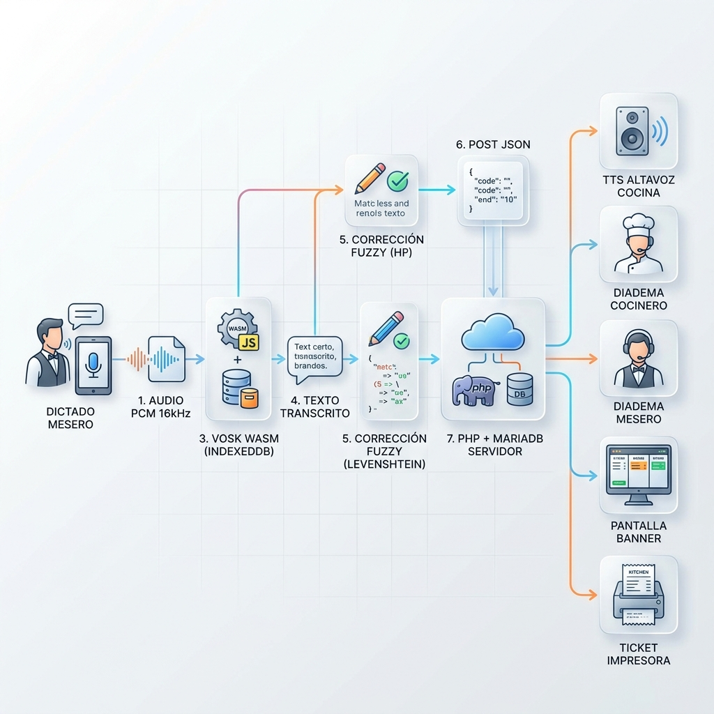

Documento de especificación técnica de implementación. Incluye modificaciones de alcance: motor TTS, gramática restringida para cocineros, cola offline, y exclusión de procesamiento de pagos.
El presente documento establece las especificaciones técnicas de implementación para un sistema de comandas por reconocimiento de voz offline basado en el motor VOSK. El sistema opera íntegramente sobre infraestructura local con PHP 8.x, MariaDB y Ubuntu Server 22.04 LTS.
La arquitectura se fundamenta en tres pilares técnicos diferenciadores: (1) el reconocimiento de voz 100% offline mediante WebAssembly en el navegador del dispositivo Android del mesero, (2) la interacción exclusiva por voz del cocinero mediante diadema con gramática ultra-restringida, y (3) la síntesis de voz (TTS) para anuncios en altavoz de cocina y respuestas en diademas. El sistema no procesa métodos de pago; calcula totales y genera tickets impresos únicamente.
El procesamiento de audio se ejecuta en el edge (dispositivo del mesero/cocinero) mediante WebAssembly, distribuyendo la carga computacional y eliminando dependencias de servicios cloud. Las comandas se transmiten vía HTTPS a un servidor local LAMP sobre Ubuntu 22.04, donde PHP-FPM gestiona la lógica de negocio y MariaDB persiste los datos transaccionales.
El sistema opera bajo una arquitectura de tres capas con procesamiento distribuido entre el edge (dispositivos móviles) y el servidor central.

Figura 1. Arquitectura de alto nivel del sistema de comandas VOSK v2.0
Los componentes principales son:

Figura 2. Flujo de datos completo incluyendo canales TTS
El flujo detallado es:
/api/comanda.php.RegistrarComanda dentro de una transacción atómica en MariaDB.Cuando el usuario interactúa con la WebApp/PWA, las herramientas del lado del cliente y del servidor cooperan de manera síncrona y asíncrona siguiendo esta secuencia exacta:
cola_peticiones_pendientes para su posterior sincronización.hx-target) sin alterar el resto de la aplicación.Este escenario describe el flujo de datos exacto cuando un usuario con rol de "Mesero" o "Operario" presiona un botón, dicta un comando de voz (ej: "Registrar pedido de 50 unidades" o comanda de productos), el sistema lo procesa con Inteligencia Artificial, guarda la información en la base de datos de forma segura y actualiza la pantalla junto con las notificaciones push.
6003). Swoole recibe los datos binarios de red y abre una conexión directa por sockets de alta velocidad hacia el contenedor aislado de alphacep/kaldi-es (Vosk). La IA de Vosk procesa el audio localmente y le devuelve a Swoole el texto plano transcribido: "Registrar pedido de 50 unidades". Swoole envía el texto de vuelta al navegador a través del mismo WebSocket./pedidos/crear administrada por Flight PHP. El formulario de HTMX adjunta un token de idempotencia único e invisible. Flight PHP recibe la petición e invoca a Delight-PHP/Auth junto con las tablas de permisos del RBAC personalizado para cerciorarse de que el usuario logueado posee el permiso de escritura CREAR_PEDIDOS. Validada la seguridad, el controlador invoca a Medoo, el cual ejecuta un Stored Procedure en MariaDB 11 que inserta el pedido, actualiza los inventarios y confirma la transacción de forma aislada y segura.hx-swap-oob="true" conteniendo las nuevas migas de pan actualizadas (Inicio / Pedidos / Creado Exitosamente). HTMX recibe la respuesta asíncrona, inyecta la nueva fila en la tabla de pedidos, actualiza los breadcrumbs externos y apaga el indicador visual de carga (spinner). Paralelamente, el servidor envía un evento push global. El Service Worker Nativo del navegador despierta en segundo plano y muestra una notificación nativa en la pantalla del usuario confirmando el registro del pedido.El código fuente de las webapps y PWA se organiza bajo el repositorio demos-oferta/main:
| Módulo | Ruta | Views (Plates) |
|---|---|---|
| Raíz del proyecto (VS Code) | restaurantb/www/ | — |
| Reportes | restaurant/reportes/ | reportes/views |
| PWA Mesero | restaurant/mesero/ | mesero/views |
| PWA Cocina | restaurant/cocina/ | cocina/views |
| Webapp Caja | restaurant/caja/ | caja/views |
| Webapp Administración | restaurant/admin/ | admin/views |
| Webapp Sistema | restaurant/sistema/ | sistema/views |
/home/carlos/GitHub/caelitandem_home/restaurantb/www/ — Todas las rutas de la tabla son relativas a este directorio.
Para asegurar una arquitectura limpia e independiente del backend, los activos del frontend (CSS, JS, imágenes y manifiestos de PWA) se estructuran en subdirectorios bajo el directorio raíz web-assets/, clasificando las dependencias por tipo de recurso y librería:
web-assets/css/ — Hojas de estilo globales (ej. app-voice.css, paxstyle2.css).web-assets/img/ — Elementos visuales, logos e iconos estáticos del sistema.web-assets/pwa/ — Manifiesto de la aplicación (manifest.json) y Service Workers nativos para habilitar el funcionamiento offline.web-assets/libs/ — Módulos y librerías externas de JavaScript organizados de forma aislada para evitar conflictos globales:
web-assets/libs/models/ — Subdirectorio especializado que contiene el motor cliente de Vosk, sus AudioWorklets y archivos auxiliares:
vosk.js — Módulo JavaScript principal para la interfaz con el modelo WebAssembly de Vosk.pcm-processor.js — Script de AudioWorkletProcessor para la captura y conversión de buffer de audio a PCM de 16kHz en segundo plano.asamblea.js — Lógica de control de dictado y paridad para el módulo de asambleas.app-voice.js y app-main.js — Orquestadores de inicialización de audio y estados de la UI.vosk-model-small-es-0.42.tar.gz — Archivo comprimido del modelo acústico en español (39MB) requerido para el funcionamiento local offline de la PWA.Debido al tamaño de los modelos de voz (el modelo small pesa ~39MB), por defecto las políticas de desarrollo globales del ecosistema omiten archivos con extensión .tar.gz para evitar sobrecargar los repositorios remotos de Git. Sin embargo, para garantizar que la PWA cuente con el recurso local necesario en el despliegue inmediato sin requerir descargas externas de terceros, se establece la siguiente regla SSOT:
web-assets/libs/models/vosk-model-small-es-0.42.tar.gz debe ser empujado obligatoriamente en el repositorio remoto. Se prohíbe omitir este archivo en el push.
Para implementar esta regla sin alterar el comportamiento general de Git para otros archivos comprimidos temporales, se agregó una excepción (negación) en el archivo restaurantb/www/.gitignore local:
# Ignorar archivos comprimidos por defecto
*.tar.gz
# EXCEPCIÓN: Forzar tracking del modelo de voz
!web-assets/libs/models/vosk-model-small-es-0.42.tar.gzEl desarrollo del proyecto Agua y el módulo de comandas restaurante se distribuye y gestiona a través de los siguientes repositorios Git y herramientas de sincronización:
agua_chatledger/aguad_ac_oferta (Rama: aguad_ac_oferta, Tenant Tlapa)caelitandem_home/main (Repositorio general de desarrollo)demos-oferta/main (Repositorio de distribución/demostración)Para garantizar la paridad absoluta del código y documentación en todos los entornos de desarrollo e integración, se ejecuta el script unificado de sincronización multi-repositorio:
Script: docs-dev/ga-cl-ia/sync_all_repos.shEl script automatiza los commits y pushes de manera consistente, sanitizando secretos y credenciales para evitar el bloqueo del API de GitHub.
| Capa | Tecnología | Versión | Propósito |
|---|---|---|---|
| Sistema operativo servidor | Ubuntu Server LTS | 22.04 | Infraestructura base del servidor local |
| Servidor web | Apache HTTP Server | 2.4+ | Host de aplicación PHP, SSL, virtual hosts |
| Lenguaje backend | PHP | 8.1 – 8.3 | Lógica de negocio, API REST, TTS |
| Procesador PHP | PHP-FPM | 8.1 – 8.3 | Gestión eficiente de procesos PHP concurrentes |
| Base de datos | MariaDB | 10.6+ | Persistencia relacional de comandas y usuarios |
| Frontend mesero | PWA (HTML5 + JS) | ES2020+ | Interfaz progresiva, captura de voz, offline |
| Reconocimiento voz (mesero) | VOSK (WebAssembly) | 0.3.45+ | Transcripción offline de comandas a texto |
| Reconocimiento voz (cocinero) | VOSK (WebAssembly) | 0.3.45+ | Transcripción de comandos de control del cocinero |
| Modelo de lenguaje | vosk-model-small-es-0.42.tar.gz | 0.42 | Modelo pre-entrenado en español de 39MB (descargado y cacheado localmente) |
| Síntesis de voz (TTS) | Web Speech API (SpeechSynthesis) | W3C | Anuncios en altavoz y respuestas en diademas |
| Skills del Agente | Directrices y Estándares (.agents/skills/) | SSOT | Guías y patrones técnicos unificados que rigen la arquitectura y el código |
| Audio API | Web Audio API + AudioWorklet | W3C | Captura y procesamiento de audio de baja latencia |
| Almacenamiento local | IndexedDB API | W3C | Caché del modelo VOSK y cola offline |
| Sincronización | Fetch API + Background Sync | W3C | Envío de comandas y sincronización offline |
| Notificaciones tiempo real | Server-Sent Events (SSE) | W3C | Push de comandas a pantalla banner y caja |
| Bluetooth audio | Web Bluetooth API / A2DP | W3C | Conexión de diademas al dispositivo Android |
| Micro-framework backend | Flight PHP | 3.x | Routing, middleware, DI Container para API REST |
| Motor de plantillas | Plates (League) | 3.3+ | Vistas PHP nativas con herencia de layouts y secciones |
| Interactividad hipermedia | HTMX | 2.x | Intercambio parcial de HTML server-driven sin JS complejo |
| AJAX / Helpers JS | paxscript.js (custom) | — | Estandarización de peticiones AJAX y manejo de respuestas |
| Autenticación | Delight PHP Auth | — | Autenticación nativa segura (login, roles, sesiones) |
| Persistencia offline | Dexie.js (IndexedDB) | 4.x | Wrapper de IndexedDB para cola offline y caché de datos |
pm = ondemand
pm.max_children = 10
pm.process_idle_timeout = 10s
pm.max_requests = 500innodb_buffer_pool_size = 512M
innodb_log_file_size = 128M
innodb_flush_log_at_trx_commit = 2
query_cache_size = 0
query_cache_type = 0El diseño del sistema de comandas se rige por un principio estricto de frugalidad técnica y rechazo a frameworks pesados (como React, Angular o Laravel) para optimizar el rendimiento en el hardware local limitado (Servidor y teléfonos de gama media/baja). Se prioriza el intercambio de hipermedia servidor-cliente y el uso de librerías nativas o de bajo peso que no exigen procesos de compilación o empaquetado (build steps) costosos:
La adopción de HTMX permite construir una SPA (Single Page Application) ligera manteniendo el control del estado y del HTML en el servidor (Flight/Plates). Las directivas de integración clave son:
<a> y formularios de la aplicación, convirtiendo las recargas tradicionales en llamadas AJAX transparentes.hx-swap-oob="true") para actualizar elementos de interfaz remotos (ej. barra de estado del mesero, breadcrumbs, totales del día) en una única respuesta HTTP, sin necesidad de realizar múltiples peticiones AJAX paralelas..htmx-request y hx-indicator para activar automáticamente spinners e indicadores de carga globales, previniendo la frustración del usuario en llamadas lentas.Medoo se utiliza como el constructor de consultas (Query Builder) centralizado para la comunicación con MariaDB 11, proveyendo inmunidad nativa a ataques de Inyección SQL mediante sentencias parametrizadas basadas en PDO:
$db->action(function($db) {
// Lógica secuencial
});$db->query("CALL RegistrarComanda(:params)", $params);El esquema completo de la base de datos (ER, DDL, Procedimientos Almacenados, Delight-PHP/Auth) ha sido extraído a un documento independiente.
→ Ver Modelo de Datos (ER y DDL)La especificación de endpoints y request/response ha sido extraída a un documento especializado.
→ Ver API BackendToda la arquitectura, lógica Levenshtein, y WebAssembly de IA ha sido extraída a un documento especializado.
→ Ver Arquitectura de Voz (IA)La aplicación para el mesero es una Progressive Web App (PWA) que se accede mediante el navegador Chrome del teléfono Android.
| Archivo | Función |
|---|---|
index.php | Shell principal y metadatos PWA |
web-assets/pwa/manifest.json | Configuración de iconos, temas y colores PWA |
web-assets/pwa/sw.js | Service Worker para caché local y sincronización offline |
web-assets/pwa/dexie/dexie.min.js | Librería local Dexie.js descargada para acceso sin internet |
web-assets/pwa/dexie/db.js | Módulo de esquema de IndexedDB e interfaz con Dexie |
web-assets/libs/models/vosk.js | Módulo principal de inicialización cliente de VOSK |
web-assets/libs/models/pcm-processor.js | AudioWorklet para captura de audio PCM a 16kHz |
web-assets/libs/models/app-voice.js | Orquestador de eventos de voz, estados del micrófono y envío |
web-assets/libs/models/app-main.js | Lógica principal de UI y control de estados de la PWA |
web-assets/css/app-voice.css | Estilos CSS responsivos para el dictado y la interfaz móvil-first |
# Generar certificado autofirmado
sudo openssl req -x509 -nodes -days 365 -newkey rsa:2048 \
-keyout /etc/ssl/private/comandas-local.key \
-out /etc/ssl/certs/comandas-local.crt \
-subj "/C=MX/ST=Estado/L=Ciudad/O=Restaurante/CN=comandas.local"Para garantizar una navegación fluida e impedir la pérdida de datos transaccionales, el frontend de la PWA implementa las siguientes directivas de experiencia de usuario:
hx-disabled-elt="this, #btn-enviar", HTMX deshabilita automáticamente los botones seleccionados durante la llamada AJAX y los reactiva al recibir la respuesta del servidor.HX-Redirect en lugar de redireccionamientos HTTP tradicionales. Adicionalmente, se adjunta un token de un solo uso en cada formulario que el servidor invalida tras su procesamiento inicial..htmx-request vinculada a hx-indicator, bloqueando la pantalla durante transacciones lentas para evitar interacciones no deseadas del mesero.hx-swap-oob="true", permitiendo mantener la navegación sincronizada de forma eficiente.El archivo app.js centraliza la gestión del hardware de audio, el Web Worker de Vosk y el almacenamiento transaccional local en IndexedDB:
Al arrancar, app.js inicializa las tablas locales con Dexie.js para contingencias offline y notificaciones:
offline_text_queue: Cola FIFO para almacenar transcripciones limpias (Estrategia IT1) generadas en desconexión.offline_audio_queue: Cola FIFO de blobs de audio PCM crudo (Estrategia IT2) pendientes de envío al WebSocket de Swoole.buzon_notificaciones: Almacén local que retiene las últimas 20 notificaciones push (eventos de cocina), garantizando que el historial sobreviva a recargas del navegador. La actualización del DOM se inyecta posteriormente de manera reactiva usando HTMX y la API nativa de IndexedDB.Se maneja la API nativa de audio de Chrome (AudioContext y MediaRecorder) aislando el procesamiento:
Audio Blobs (PCM/WAV) de corta duración para transmisión secuencial por WebSockets.Dado el alto consumo de CPU de la IA local, app.js ejecuta el motor Vosk en un hilo secundario (Web Worker nativo):
postMessage() y el escucha onmessage para recibir resultados de transcripción sin congelar el hilo principal de renderizado visual de la PWA.Al detectar la restauración de red (navigator.onLine === true):
La pantalla de cocina es una interfaz web de solo lectura optimizada para monitores horizontales de 19 a 24 pulgadas. No admite entrada táctil, clic ni teclado.
/api/comandas/pendientes.php.creado_en ascendente (FIFO) en el query SQL.creado_en.
border-left: 6px solid #28a745): 0–10 minutosborder-left: 6px solid #ffc107): 10–20 minutosborder-left: 6px solid #dc3545): más de 20 minutossetInterval en JavaScript del lado del cliente./* Estructura del banner de cocina */
.banner-container {
display: grid;
grid-template-columns: repeat(3, 1fr);
gap: 16px;
padding: 16px;
}
.comanda-card {
border-left: 6px solid #28a745;
padding: 16px;
margin: 8px;
border-radius: 8px;
background: white;
box-shadow: 0 2px 4px rgba(0,0,0,0.1);
}
.comanda-card.urgente { border-left-color: #ffc107; }
.comanda-card.critica { border-left-color: #dc3545; }
.mesa-numero { font-size: 48px; font-weight: bold; text-align: center; }
.tiempo-transcurrido { font-family: monospace; font-size: 24px; }El manual de servidores, red local, seguridad, PWA y troubleshooting Android ha sido extraído a un manual de operaciones.
→ Ver Infraestructura y Despliegue DevOps| Fase | Duración | Actividades | Entregable |
|---|---|---|---|
| Fase 1: Preparación | Semana 1 | Hardware servidor; Ubuntu 22.04; red local; SSL; LAMP stack; CUPS | Servidor listo |
| Fase 2: Backend | Semanas 2–3 | Base de datos MariaDB; API PHP; procedimientos almacenados; autenticación | API funcional |
| Fase 3: PWA Mesero | Semanas 3–4 | PWA; integración VOSK WASM; corrección Levenshtein; cola offline; TTS diadema | PWA funcional |
| Fase 4: Cocina Voz | Semanas 4–5 | VOSK secundario para cocinero; gramática restringida; parser de comandos; TTS altavoz y diadema | Interfaz de cocina por voz |
| Fase 5: Pantallas | Semanas 5–6 | Pantalla banner cocina; pantalla caja; impresión de tickets vía CUPS | KDS + caja operativos |
| Fase 6: Catálogo | Semana 6 | Carga de productos; palabras clave para VOSK; asignación de diademas | Catálogo completo |
| Fase 7: Pruebas | Semana 7 | Pruebas integrales; ajuste de gramática; optimización TTS; validación en producción | Sistema validado |
| Fase 8: Capacitación | Semana 8 | Entrenamiento de meseros en dictado; capacitación de cocineros en comandos de voz | Personal capacitado |
| Fase 9: Go-Live | Semana 9 | Operación en paralelo (opcional); monitoreo; soporte intensivo | Sistema en producción |
Actividades a realizar por el equipo de desarrollo para alimentar la gramática y el algoritmo de corrección fonética (Levenshtein):
/home/carlos/GitHub/caelitandem_home/Portafolio-dev-2026/DatasetsPortafolio/Construir la versión operativa de VOSK ejecutándose localmente en el navegador (WASM) para todos los actores (Meseros y Cocineros).
Dexie.js (IndexedDB) para guardar textos limpios al perder señal Wi-Fi.Construir la interacción por voz donde la interfaz actúa solo como micrófono y el servidor realiza la inferencia pesada para todos los actores.
Swoole Async Server en el puerto 6003 para recibir el streaming de Audio Blobs desde el navegador.alphacep/kaldi-es en el servidor local Ubuntu y conectar Swoole a él.Esqueleto de integración del micro-framework Flight PHP, el constructor Medoo y el puente nativo PDO de Delight-PHP/Auth:
<?php
// index.php - Servidor de Rutas Principal bajo Apache 2.4
require 'vendor/autoload.php';
use Delight\Auth\Auth;
use Medoo\Medoo;
use League\Plates\Engine;
session_start();
$db = new Medoo([
'type' => 'mysql',
'host' => '127.0.0.1',
'database' => 'webapp_pwa_db',
'username' => 'root',
'password' => 'secret',
'charset' => 'utf8mb4'
]);
Flight::register('db', get_class($db), [$db]);
$templates = new Engine(__DIR__ . '/vistas');
Flight::register('view', get_class($templates), [$templates]);
Flight::map('checkPermission', function($permiso) {
$auth = new Auth(Flight::db()->pdo);
if (!$auth->isLoggedIn()) return false;
return Flight::db()->has("rbac_permisos_usuarios", [
"AND" => ["user_id" => $auth->getUserId(), "permiso_id" => Flight::db()->get("rbac_permisos", "id", ["nombre" => $permiso])]
]);
});
Flight::route('POST /transaccion', function() {
$token = Flight::request()->data->idempotency_token;
if (!isset($_SESSION['processed_tokens'][$token])) {
// Ejecución segura mediante Stored Procedures con Medoo
Flight::db()->query("CALL RegistrarOperacionNegocio(:user_id, :monto)", [
":user_id" => 1,
":monto" => Flight::request()->data->monto
]);
$_SESSION['processed_tokens'][$token] = true;
}
echo Flight::view()->render('partials/exito', ['mensaje' => 'Guardado exitosamente']);
});
Flight::start();
Ejemplo de formulario web responsivo que utiliza las directivas declarativas de HTMX para deshabilitar elementos e inyectar actualizaciones fuera de banda:
<?php $this->layout('layout', ['title' => 'Nueva Operación']) ?>
<form hx-post="/transaccion"
hx-target="#vista-principal"
hx-indicator="#loader"
hx-disabled-elt="this, #btn-enviar">
<!-- Token de Idempotencia para evitar reenvíos duplicados -->
<input type="hidden" name="idempotency_token" value="<?=uniqid('token_', true)?>">
<input type="number" name="monto" required min="1">
<button type="submit" id="btn-enviar">Confirmar Operación</button>
</form>
<!-- Intercambio fuera de banda (OOB) para actualizar migas de pan asíncronamente -->
<nav id="breadcrumbs" hx-swap-oob="true">
<a href="/">Inicio</a> / <span>Transacciones</span>
</nav>